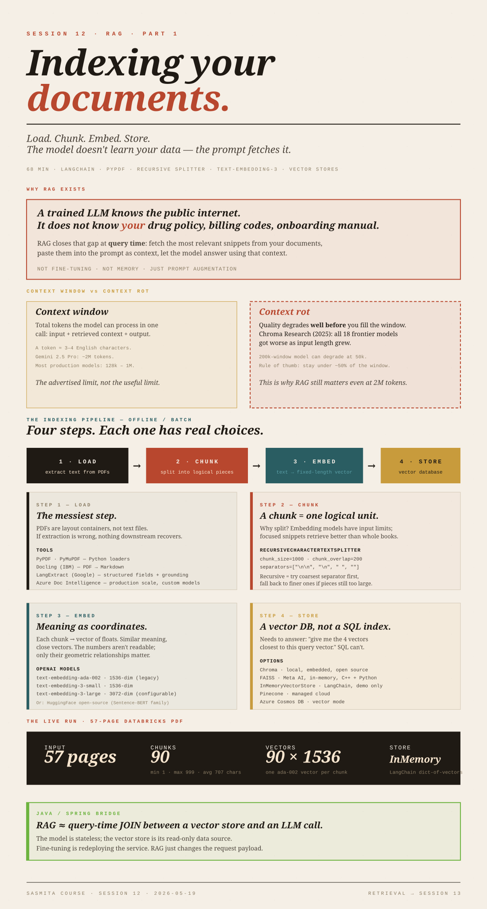

RAG, Part 1:Indexing
Load. Chunk. Embed. Store. The pipeline that lets an LLM answer questions over your documents — without retraining anything.

The model doesn't know your data.
An LLM is trained on generic public data. It knows the open web; it does not know your company's drug-testing policy, your billing codes, or your onboarding handbook. RAG (Retrieval-Augmented Generation) is the standard technique for letting the model answer questions over your data without retraining it.
The mechanic is simple: at question time, fetch the most relevant snippets from your documents, paste them into the prompt as context, let the model answer using that context. The model is not modified; the prompt is augmented.
Think of RAG as a query-time JOIN between a vector store (your indexed docs) and an LLM call. The model is a stateless service; the vector store is its read-only data source.
Fine-tuning is closer to redeploying the service with new weights. RAG just changes the request payload.
RAG has two phases:
| Phase | When it runs | What it does |
|---|---|---|
| Indexing | Offline / batch | Load documents → chunk → embed → store in a vector database |
| Retrieval | Online / per-request | Embed the user's question → similarity-search the vector store → stuff top-k chunks into the prompt → call the LLM |
Today is only indexing. Retrieval is Session 13.
Context window vs. context rot.
Context window is the maximum number of tokens the model can process in a single call — input prompt + retrieved context + the model's output, all counted together. A token is roughly 3–4 characters of English, not a whole word. Gemini 2.5 Pro advertises around 2 million tokens; most production models sit between 128k and 1M.
Context rot is the part most learners miss. Even when you have a 2M-token window, quality starts degrading well before you fill it. Chroma's 2025 study tested 18 frontier models (GPT-4.1, Claude 4, Gemini 2.5, Qwen3, …) and every one got worse as input length grew. A 200k-window model can show meaningful degradation by 50k tokens. The model doesn't crash — it just gets less reliable at following instructions, more prone to hallucination, less responsive to corrections.
If your whole 500-page manual fits in 1M tokens, why bother? Because of context rot. Sending the whole book is slower, more expensive, and less accurate than sending the 4 most relevant chunks. RAG gives the model "infinite context" by only ever showing it the right small slice.
The speaker's rule of thumb: keep effective usage under ~50% of the window. That's the practical reason for retrieval over context-stuffing.
The four steps of indexing.
Each step has real choices and real failure modes. The most common reason a RAG system answers badly is not the LLM — it's an upstream choice in this pipeline.
Getting text out of source documents.
PDFs are the hard case. They're not text files; they're page-layout containers that may contain scanned images, two-column layouts, tables, charts, hyperlinks, and handwriting. Pulling clean text out of them is called OCR + layout parsing, and it is the single most error-prone step in the pipeline. If extraction is wrong, nothing downstream can recover.
| Tool | What it is | When to reach for it |
|---|---|---|
PyPDF (pypdf) | Pure-Python PDF reader | Simple, mostly-text PDFs; default in LangChain's PyPDFLoader |
| PyMuPDF | C-backed PDF library, faster | When PyPDF is too slow or misses layout |
| Docling | IBM open-source; outputs Markdown directly | Complex PDFs with tables/charts; you want Markdown for structured chunking later |
| LangExtract | Google library (Apache-2.0), Gemini-powered structured extraction with source grounding | When you need structured fields (medications, dosages, …), not just text. Has an interactive visualization showing where each value came from |
| Azure AI Document Intelligence | Microsoft commercial service (formerly Form Recognizer) | Production scale, complex layouts, prebuilt models (invoice, receipt, ID, contract) and custom fine-tuning |
LangChain's DocumentLoader class is a thin wrapper around most of these — you import one of PyPDFLoader, DoclingLoader, etc., call .load(), and get back a list of Document objects, each with .page_content and .metadata (source path, page number, creation time).
from langchain_community.document_loaders import PyPDFLoader
loader = PyPDFLoader("policy.pdf")
documents = loader.load()
print(f"Loaded {len(documents)} pages")
print(documents[0].page_content[:400])
print(documents[0].metadata)
# → {'source': 'policy.pdf', 'page': 0, 'creationdate': '...', ...}PDF extraction is the messiest layer in RAG. PDFs vary wildly — scanned faxes vs. digital exports, single-column vs. multi-column, embedded tables vs. raster images. No single tool wins on all of them. The speaker's homework: try several on your own documents and compare.
Splitting documents into retrievable pieces.
You don't embed a whole book as one vector; you split it into chunks and embed each. A chunk is whatever you decide a "logical unit" is — a paragraph, a section, a page, or a fixed character window.
Two reasons to split:
- Embedding models have their own input limits (a few thousand tokens).
- Retrieval is more useful when each match is a focused snippet, not an entire book.
RecursiveCharacterTextSplitter
The session's working example:
from langchain_text_splitters import RecursiveCharacterTextSplitter
text_splitter = RecursiveCharacterTextSplitter(
chunk_size=1000, # target characters per chunk
chunk_overlap=200, # characters repeated between adjacent chunks
length_function=len,
separators=["\n\n", "\n", " ", ""]
)
chunks = text_splitter.split_documents(documents)How "recursive" works. The splitter tries the first separator ("\n\n", paragraph breaks). If a resulting piece is still over chunk_size, it falls back to the next separator ("\n", then " ", finally character-level). The goal is to break on the coarsest natural boundary that keeps each piece under the limit. That's why actual chunk sizes vary — some pieces split at 600 chars because a paragraph break happened to land there.
In the live run: 57 pages → 90 chunks → min 1 char, max 999 chars, avg ~707. The range tells you separators were doing real work.
Why overlap
chunk_overlap=200 means the last 200 characters of chunk N reappear as the first 200 characters of chunk N+1. The purpose is to preserve context across the boundary so an idea split across two chunks can still be retrieved as one — and so adjacent chunks are recognizably neighbors when you inspect them.
Yes, this means the same content gets embedded twice in two different vectors. That redundancy is deliberate; it's how the splitter compensates for not knowing the "true" semantic boundaries.
Other splitters
RecursiveCharacterTextSplitter is the default when you have no control over document structure (user-uploaded files, mixed formats). When you do know the structure, structure-aware splitters work better:
MarkdownHeaderTextSplitter— chunks at#,##,###boundaries. Use this if you converted with Docling, since Docling outputs Markdown.HTMLHeaderTextSplitter— same idea for HTML tags.RecursiveJsonSplitter— preserves JSON structure.- Page-level chunking — just use each PDF page as a chunk. Crude but often surprisingly fine for big books.
Picking chunk_size and overlap
There is no formula. It's trial-and-error against your data and your retrieval quality. Common starting points: 500–1000 characters with 10–20% overlap. The honest signal is that chunking is hit-and-trial, and bad chunk boundaries are a top cause of bad RAG accuracy.
A chunk should be one logical unit. If a single explanation gets split across two chunks, retrieval may return only half of it and the model will hallucinate the rest. Structure-aware splitting (Markdown headers, sections) protects against this; fixed-size character splitting only approximates it.
Turning chunks into vectors.
An embedding is a fixed-length list of floating-point numbers that represents the meaning of a piece of text. Two chunks with similar meaning produce vectors that are close together in high-dimensional space (small cosine distance).
from langchain_openai import OpenAIEmbeddings
embeddings = OpenAIEmbeddings() # defaults to text-embedding-ada-002Current OpenAI embedding models — the session referred to "ada-002" and "large-003" but the real names are -3-large / -3-small:
| Model | Dimensions | Notes |
|---|---|---|
text-embedding-ada-002 | 1536 | Legacy. Still works, still in code. |
text-embedding-3-small | 1536 (configurable down) | Cheaper, current default for most cases |
text-embedding-3-large | 3072 by default; shorten via dimensions param | Highest quality. A truncated 3-large at 256 dims still beats full ada-002 at 1536. |
Each chunk becomes a vector of, e.g., 1536 floats. The session printed one for inspection: a 1536-dim vector of seemingly meaningless numbers — that's the point. The numbers aren't human-readable; only their geometric relationships to other vectors matter.
Alternatives:
- Hugging Face open-source models (the Sentence-BERT family and similar) via
HuggingFaceEmbeddings. Free, runs locally, no data leaves your infrastructure. - Any encoder-based transformer can produce embeddings. Historically, encoder-only models (BERT lineage) outperformed decoder-only ones for embeddings, which is why Sentence-BERT became dominant. Today, modern decoder-based embedding models (including OpenAI's
text-embedding-3) are competitive at the top of the MTEB benchmark — the encoder/decoder distinction is less load-bearing than it used to be.
An embedding is like a deterministic hash function — same text in, same vector out — except instead of hashing to avoid collisions, it hashes to preserve similarity. Two strings that mean the same thing land near each other in vector space. That's the property a regular hash explicitly destroys.
The vector database.
Embeddings need a home that supports similarity search — "give me the 4 vectors nearest to this query vector." A normal SQL index can't do that efficiently; you need a vector store.
| Store | Type | Notes |
|---|---|---|
| Chroma | Local / embedded, open source | Default starter; runs in-process, persists to disk |
| FAISS | In-memory library by Meta AI Research (Facebook AI Similarity Search) | C++ core with Python bindings; very fast; you manage persistence yourself. |
| InMemoryVectorStore (LangChain) | Pure-Python in-process dict-of-vectors | What the live code actually uses — fine for demos, not for production |
| Pinecone | Managed cloud | Pay-per-use; no infra to run |
| Azure Cosmos DB (vector mode) | Managed cloud | Integrates with Azure stack |
RAG.py) actually uses LangChain's InMemoryVectorStore. Both are local/in-process; FAISS is the more serious option once you outgrow demos.
from langchain_core.vectorstores import InMemoryVectorStore
vector_store = InMemoryVectorStore(embeddings)
ids = vector_store.add_documents(documents=chunks) # embeds + stores
retriever = vector_store.as_retriever(search_kwargs={"k": 4})add_documents internally calls the embedding model for each chunk, then stores (id, vector, metadata, page_content) tuples. as_retriever(k=4) returns the 4 nearest chunks for any query — but retrieval mechanics are Session 13.
What the live run produced.
Input: 57-page Databricks PDF.
Loaded 57 pages
Created 90 chunks from 57 pages
Chunk statistics:
Min: 1 chars
Max: 999 chars
Avg: 707 chars90 chunks × 1536 dims = a 90 × 1536 matrix of floats sitting in vector_store. That's the indexed corpus. Retrieval will turn an incoming question into one more 1536-dim vector and compute its similarity against all 90.
The session also showed (without going deep) that asking "Modifier 54?" against a healthcare policy PDF returned a correct, document-grounded answer — i.e. the pipeline works end-to-end. The retriever and prompt-chain code is in RAG.py but was explicitly deferred to Session 13.
Why production looks different.
The speaker described a production system at his employer (health insurance) that processes appeal documents — court filings from members contesting denied claims. Volume: millions of documents per week, billions per year. Each document is 20–100 pages, multi-format (digital PDFs, scanned faxes, handwritten letters). From each, the system must extract 20–30 structured fields (member ID, intent, dates, supporting evidence).
This is the use case where Azure Document Intelligence earns its cost over open-source loaders:
- Pre-trained models for layout, invoice, receipt, ID, contract, health insurance card, bank statement, etc.
- A Read model for plain OCR.
- Custom model support — annotate a few samples of a new format and Doc Intelligence fine-tunes an extractor for it.
- Architecture pattern: a router classifies the incoming format and dispatches to the matching custom model; if no model matches, the document is queued for annotation and a new model is trained.
Pricing (as cited in session): roughly $1 per 10,000 pages for the cheaper models. Always verify against current Azure pricing.
Embedding proprietary data.
When you embed proprietary documents using a third-party API (OpenAI, Azure OpenAI, Anthropic), the text of those chunks is sent over the network. The speaker's points, restated precisely:
- Enterprise contracts with Microsoft / OpenAI / Anthropic typically include data-handling terms (no training on customer data, regional residency, etc.) — these are real legal protections, but they are contractual, not absolute guarantees that data cannot leak.
- Before production deployment, enterprise projects go through an AI/security review ("AIRB" or equivalent) where a dedicated cybersecurity team scans the data flow, the model, and the keys.
- API keys are usually short-lived (token-based, auto-refreshing on the order of a minute) and protected by network-layer controls (firewall, private endpoints).
- Local / open-source embedding models sidestep most of this entirely — the data never leaves your network.
If your organization can't send data to a third-party API, use Hugging Face models hosted on your own infrastructure. Quality is close to OpenAI's for most use cases.
The indexing pipeline in one screen.
- Load — extract text from your source documents (PyPDF, Docling, LangExtract, Doc Intelligence). The messiest step; pick the right tool for your format.
- Chunk — split text into logical units.
RecursiveCharacterTextSplitteris a sensible default; Markdown/HTML splitters are better when you have structure. - Embed — turn each chunk into a fixed-length vector via an embedding model (OpenAI
text-embedding-3-*, Hugging Face open source). - Store — keep the vectors in a vector database (Chroma, FAISS, Pinecone) that supports similarity search.
Retrieval — what happens at query time — is next session.
Glossary
- RAG (Retrieval-Augmented Generation)
- Prompting technique where retrieved documents are inserted into the LLM's context at query time. Not fine-tuning; not memory.
- Context window
- Total tokens the model can process in one call (input + retrieved context + output, all combined).
- Context rot
- Empirical finding that LLM output quality degrades as input length grows, well before the context window is full. Documented by Chroma (2025) across 18 frontier models.
- Token
- A sub-word unit (~3–4 English characters). Models see tokens, not words.
- Chunk
- A piece of a document, sized to fit through an embedding model and to be a useful retrieval result.
- Embedding
- A fixed-length vector of floats that represents the meaning of a piece of text; similar meaning → close vectors.
- Vector store / vector database
- A system that indexes embeddings for fast nearest-neighbor search.
- OCR (Optical Character Recognition)
- Extracting text from images of text.
- Multimodal (in this context)
- Documents that mix text, tables, charts, and images on one page.
- Indexing vs. retrieval
- Offline preparation vs. online query-time lookup.
- k (in retrieval)
- The number of nearest chunks to return for a query (e.g.,
k=4).
SOURCES
- Chroma Research, Context Rot: How Increasing Input Tokens Impacts LLM Performance — research.trychroma.com/context-rot
- OpenAI, New embedding models and API updates — openai.com
- FAISS — github.com/facebookresearch/faiss · arXiv 2401.08281 (Douze et al., 2024)
- Google LangExtract — github.com/google/langextract
- Docling (IBM) — github.com/docling-project/docling
- Azure AI Document Intelligence — learn.microsoft.com
- LangChain Document Loaders — python.langchain.com
- LangChain Text Splitters — python.langchain.com
- MTEB Leaderboard — huggingface.co/spaces/mteb/leaderboard